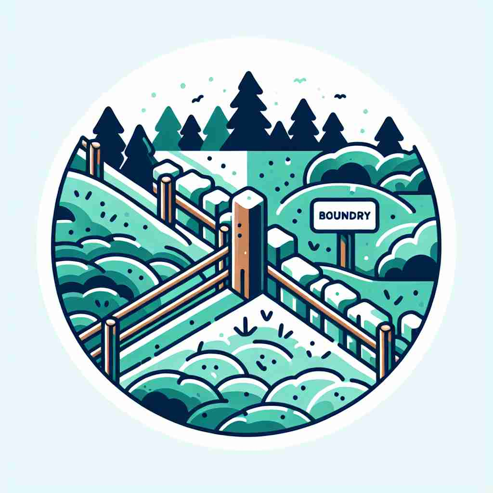

💬 The flowers grow right at the boundary of the forest. 花朵在森林的边界处生长。

💬 The fence marks the property boundary between the two fields. 围栏标记着两块田地之间的产权界限。
💬 The flowers grow right at the boundary of the forest. 花朵在森林的边界处生长。
💬 The fence marks the property boundary between the two fields. 围栏标记着两块田地之间的产权界限。
🧠 想象一条线将两个区域分开，这就是'boundary'的核心含义。无论是实际的物理边界，还是抽象的概念界限，都可以用这个词来描述。通过联想这条分隔线，你可以轻松理解和记忆'boundary'在不同语境下的用法。
🔈 ['baʊnd(ə)rɪ]
🗝️ n. a real or imaginary line that marks the edge or limit of something 标志某物边缘或限制的实际或虚构的线条
🎭 在乡村的小径旁，一位土地测量员正在标记地界。他在地上插上标志杆，示意出两块田地之间的分界线，这便是'boundary'作为实际或想象线的含义。
💬 The fence marks the boundary between the two properties. 围栏标志着两块地产之间的界限。
🌳 由词根 'bound' 意为 '界限' 加上名词后缀 '-ary' 组成，表示 '边界，界限'。
💡 可以将 'boundary' 联想为 'bound'（界线）和 'ary'（相关的东西），即 '与界线相关的东西'，帮助记忆单词的含义。
🗝️ n. the limit of a subject or sphere of activity 一个学科或活动领域的界限
🎭 在一间充满创意的办公室里，一位产品经理正在和团队讨论新项目。他说：'在这个项目中，我们不能超出技术开发的boundary，要确保进度和质量。'这展示了'boundary'作为某一主题或活动领域限制的含义。
💬 His research crosses the boundaries between physics and chemistry. 他的研究跨越了物理学和化学的界限。
🤔 从物理边界延伸到抽象领域的界限
🗝️ n. a point or limit that indicates where two things become different 表明两者开始不同的点或界限
🎭 在美术课上，老师指着一幅景观画，解释着河流与森林交接处的界限：'看这里，这就是自然界中不同元素的boundary。'这体现了'boundary'作为指示两物变得不同之处的含义。
💬 There's a fine boundary between confidence and arrogance. 自信与傲慢之间有着微妙的界限。
🤔 边界作为区分不同事物的分界点
🗝️ n. a line that marks the limits of an area in a sport 标示运动场地范围的线条
🎭 在一场紧张的足球比赛中，裁判吹响哨子，指示球出界。观众们看到球越过场边的白线，知道这就是运动场上的boundary。
💬 The ball landed just inside the boundary. 球刚好落在边界内。
🤔 在体育运动中标记场地范围的线
🗝️ n. the edge of a mathematical surface or solid 数学表面或实体的边缘
🎭 在数学课堂上，教授用三维模型展示一个立方体的表面。他指出每个面与边的交界，解释这就是数学中表面或立体的boundary。
💬 The circumference is the boundary of a circle. 圆周是圆的边界。
🤔 在数学中表示几何图形或立体的边缘